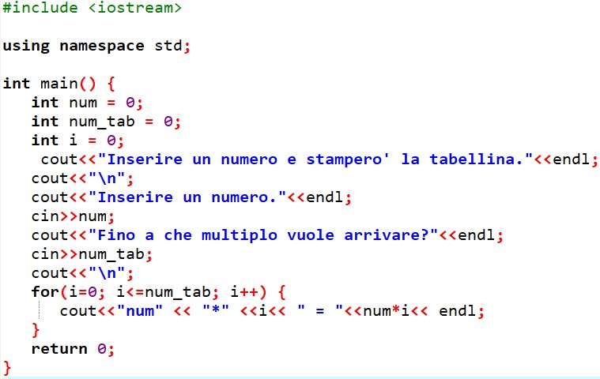
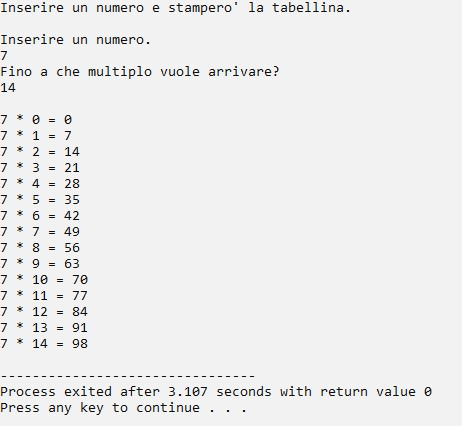

Il ciclo For (o ciclo a conteggio) ha come scopo quello di contare la sequenza delle ripetizioni entro un certo numero di cicli stabilito in partenza.
Il ciclo For viene realizzato con un contatore che, ogni volta che viene eseguito il corpo del ciclo, si aggiorna automaticamente di una certa quantità costante in più o in meno chiamata "step" o "passo di conteggio" o "passo del contatore", che ha valore iniziale (+ 1) di default fino a quando si raggiunge il valore finale (fine).
Il valore iniziale e il valore finale sono gli "estremi del ciclo", e devono essere diversi tra loro, perché se sono uguali il ciclo viene ripetuto una sola volta.
Il ciclo For funziona secondo questo schema:
inizializzazione della variabile di conteggio e del contatore;
esecuzione del corpo del ciclo:
verifica delle condizioni di ingresso (i = 0), delle condizioni di permanenza (numero delle ripetizioni : i < n), delle condizioni di aggiornamento dell’incremento del contatore (i ++ / i - -) secondo il passo di conteggio;
Al verificarsi delle condizioni di permanenza (Vero) viene eseguito il blocco delle istruzioni, poi l’incremento del contatore del passo stabilito e la ripetizione del ciclo fino a quando si arriva al valore finale di conteggio stabilito in partenza;
Il ciclo va avanti fino al verificarsi delle condizioni di permanenza (Vero); quando le condizioni di permanenza cessano (Falso) si esce dal ciclo.
Esempio di ciclo For in C++: Chiedi all'utente di inserire un numero e stampa la sua tabellina da 1 a 10 utilizzando un ciclo for - Codice
int main() {
int num = 0;
int num_tab = 0;
int i = 0;
cout<<"Inserire un numero e stampero' la tabellina."<<"endl;
cout<<"\n";
cout<<"Inserire un numero."<<"endl;
cin>>num;
cout<<"Fino a che multiplo vuole arrivare?"<<"endl;
cin>>num_tab;
cout<<"\n";
for(i=0; i<=num_tab; i++) {
cout<<"num<<" * "<<"i<< " = "<<"num*i<<"endl;
}
return 0;
}
Esempio di ciclo For in C++: Chiedi all'utente di inserire un numero e stampa la sua tabellina da 1 a 10 utilizzando un ciclo for - Codice di programmazione

Esempio di ciclo For in C++: Chiedi all'utente di inserire un numero e stampa la sua tabellina da 1 a 10 utilizzando un ciclo for - Immagine a video

Realizzato da Lorenzo Cappoli e Daniel Casprini